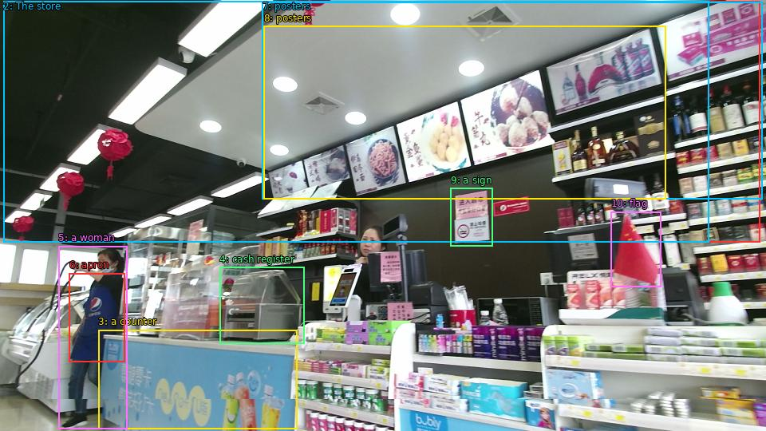

The image shows the interior of a convenience store. The store has a high ceiling with recessed lighting and red lanterns hanging from it. On the left side of the image, there is a counter with a cash register and a woman standing behind it. She is wearing a blue apron and appears to be a customer. On the right side, there are shelves stocked with various products such as bottles of alcohol, snacks, and other snacks. There are also posters on the walls with images of food and drinks. In front of the counter, there has a sign that reads "Coca-Cola" and a red flag. The overall atmosphere of the store is bright and colorful.

Original · Caption raw · Grounding raw · Koordinate
Številke so lokalni ID regije. Dolge slikovne oznake so skrajšane; spodaj so celotne fraze. Napovedane regije se lahko prekrivajo ali opisujejo skupine.
| ID | Celotna fraza | bbox xyxy |
|---|---|---|
| 1 | The store | [4.319999694824219, 1.8900001049041748, 952.7999877929688, 303.21002197265625] |
| 2 | The store | [4.319999694824219, 1.8900001049041748, 888.47998046875, 303.21002197265625] |
| 3 | a counter | [123.36000061035156, 413.3700256347656, 372.0, 537.5700073242188] |
| 4 | cash register | [275.0400085449219, 334.5299987792969, 381.6000061035156, 430.1100158691406] |
| 5 | a woman | [73.43999481201172, 308.07000732421875, 159.83999633789062, 537.030029296875] |
| 6 | apron | [86.87999725341797, 342.09002685546875, 156.0, 453.33001708984375] |
| 7 | posters | [328.79998779296875, 2.9700000286102295, 955.6799926757812, 249.2100067138672] |
| 8 | posters | [330.7200012207031, 32.67000198364258, 834.719970703125, 249.2100067138672] |
| 9 | a sign | [564.9599609375, 235.7100067138672, 617.760009765625, 308.07000732421875] |
| 10 | flag | [765.5999755859375, 265.4100036621094, 828.9599609375, 359.9100036621094] |